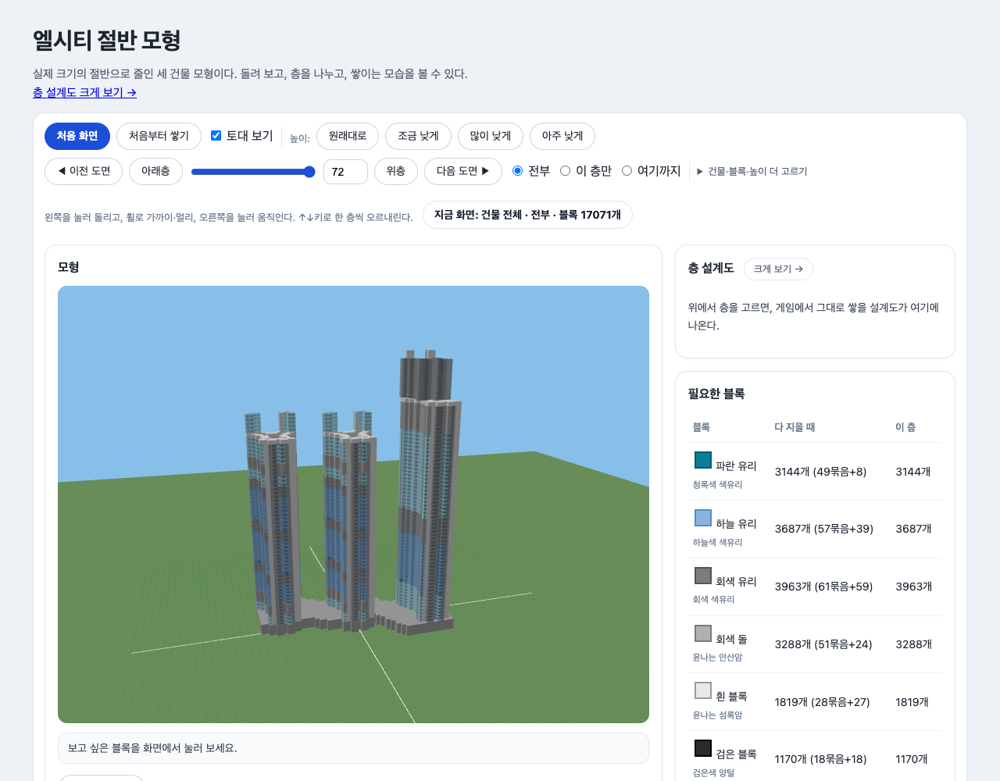
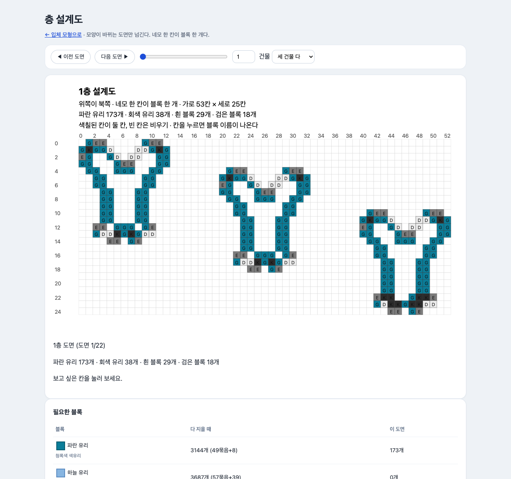

엘시티 절반 모형 뷰어
부산 해운대 엘시티를 마인크래프트에 절반 크기로 지을 수 있게 정리한 브라우저 도면집입니다.


엘시티 절반 모형 뷰어 만들었습니다. 부산 해운대 엘시티를 마인크래프트에 절반 크기로 지을 수 있게 정리한 브라우저 도면집입니다. 사한님 설계(바닥 51×105, 최고 143블록)를 PDF 도면까지 한 칸씩 대조해 절반(53×25×75, 17,071블록)으로 옮겼습니다. 입체 모형 돌려보기: https://maraegun.github.io/lct-viewer-for-gye/ 층 설계도 크게 보기(같은 주소에서 연결)도 있습니다. - 모양 바뀌는 22장만 추린 층 설계도 + 블록 클릭하면 이름·좌표 표시 - 필요한 블록 표(묶음 계산 포함) — 재료 준비용 - 토대 포함, 출입구·내벽·지붕·뿔까지 반영 원본 설계: 사한의 설계실 — 마인크래프트 엘시티 lct (2020-11-29) https://m.blog.naver.com/sciencehahn/222157399308